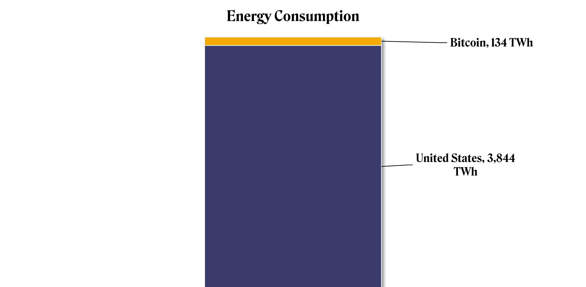
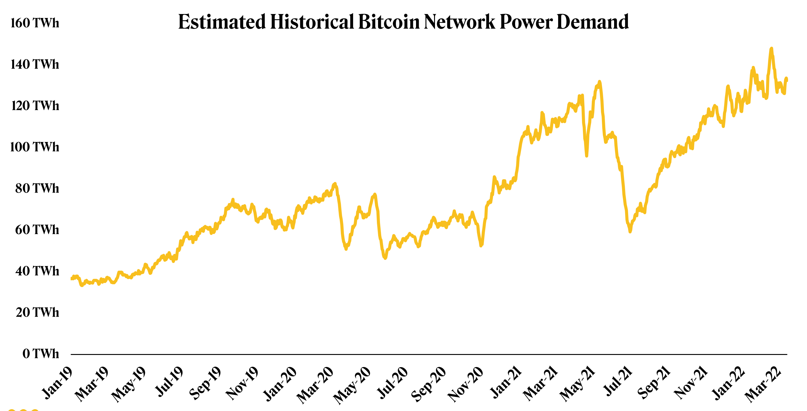
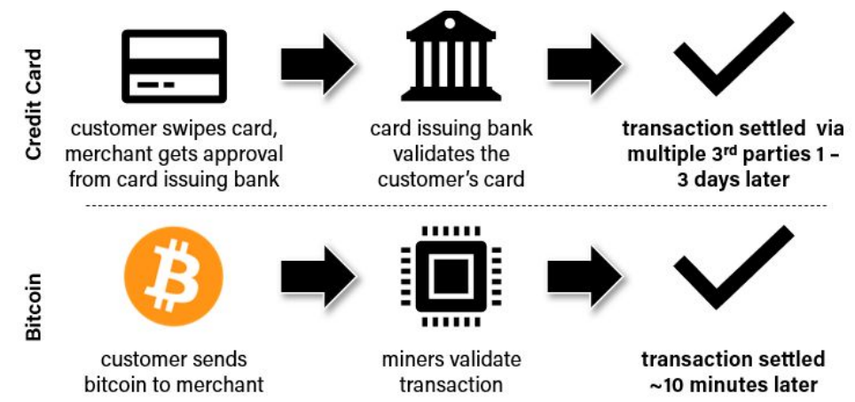

April 3, 2022
Critics of Bitcoin’s energy use should consider its relative carbon density rather than the absolute amount of energy used.

I get really animated when discussing Bitcoin’s energy use. And by “Bitcoin’s energy use,” I mean the amount of energy bitcoin mining uses. I tend to say Bitcoin’s energy use isn’t a problem and that we should instead focus on Bitcoin’s emissions. [Note: we capitalize the blockchain (Bitcoin) and use lowercase or trading symbols (bitcoin/BTC) for the asset.]
Before diving into any details, it’s important to make clear what bitcoin (BTC) mining is and why it needs to use a lot of energy. Mining is the mechanism that sustains the financial infrastructure of the Bitcoin network and it is energy intensive by design to provide ironclad security.
The comparison game
In a casual setting, my favorite way to showcase that Bitcoin’s energy use “doesn’t matter” is to append Bitcoin’s energy use to the U.S.’s energy consumption and ask if it looks like Bitcoin is using too much energy (see below).

Using this graphic, it looks like the U.S. has an energy problem and, given China consumes 79% more energy than the U.S., China has an even bigger energy problem. Bitcoin only uses an estimated 134 TWh of energy per year, a scant 1.9% and 3.5% that China and the U.S. consume annually. You can imagine the path the rest of the conversation takes.
I included this graphic to illustrate that the comparison game is usually a waste of time. Bitcoiners often do this unproductively, comparing bitcoin mining energy consumption to Christmas light energy consumption or the like, and leaving the argument at that (Christmas lights do use a lot of energy, however). I even did it in a report I published last April comparing it to video games.
I probably committed a cardinal sin in that report by trying to convince the reader that Bitcoin’s energy use was “worth it” because Bitcoin is a “global, trustless, permissionless payment settlement network and a digital, aspirational store of value.” Let’s save the morality lecture for another time and instead assume, for sake of argument, that Bitcoin is worth using energy.
Why does bitcoin mining need to use energy?
The shortest answer is that Satoshi Nakamoto, Bitcoin’s creator, thought the best way to fairly distribute bitcoins was by creating a system in which miners exchange something valuable – energy – for the right to claim the bitcoins (the shortest shortest answer is actually “anti-spam.
A longer answer should add something about the need to ward off attackers if you want to successfully decentralize trust in a network. Mining is energy-intensive so that it is prohibitively expensive to attack Bitcoin. Remember: Mining doesn’t use energy to validate transactions; energy consumption is the price exacted for securing the entire network.

The preceding point about transaction validation is important because it is enticing to compare the energy density of Bitcoin transactions to something like Visa (V). Bitcoin can only handle seven transactions per second compared to Visa’s 24,000+. But, remember, Bitcoin doesn’t use energy to validate transactions. The miners’ job is to secure the network, add new blocks of data to the chain and win bitcoin in return. That’s what they spend energy on. They’re not primarily interested in validating transactions. That consensus on the true state of the network is primarily the job of non-mining, Bitcoin full nodes. Plus, Bitcoin transactions are not the same as Visa or other payment processors’ transactions. Bitcoin transactions provide (probabilistic) finality, Visa’s don’t. Visa’s success depends on the success of separate systems. Visa’s “token” is not native to its network.

Let’s talk about Bitcoin’s emissions instead
A growing number of institutions have recognized the importance of environmental, social and governance (ESG) investing and have implemented internal mandates. Ignoring the “SG” for a moment (although they are immensely important and relevant to Bitcoin,) it makes sense from an investment perspective to consider the environmental impact of Bitcoin’s energy use.
Bitcoin’s environmental impact has more to do with the greenhouse gas emissions (mainly carbon) associated with the production of the energy used for mining and less to do with the absolute amount of energy it consumes. We’ll consider renewable energy sources like solar, hydro and wind power as “clean” given their relatively low carbon density (ignoring their negative externalities for now). The cleaner the energy mix, the smaller the environmental impact.
A common environmental critique against bitcoin mining was that most miners were in China (>80% in February 2020), a country highly dependent on coal-fired energy (although Chinese miners used a surprising amount of clean energy). When China banned crypto mining in May 2021, miners left for the U.S., Kazakhstan and Russia. Time will tell whether those miners will settle on using clean energy sources, but they seem largely set on doing so, at least in the U.S..
In the report I wrote last year, I relied on research published by Cambridge University to support the position that bitcoin mining uses a respectable percentage of renewables in its energy mix. The 2020 study suggested that 39% of total energy for Bitcoin mining came from renewable sources in 2019 (compared to 28% in 2018) with 76% of miners using renewable sources as part of their energy mix.
Since then, the Bitcoin Mining Council (BMC), a forum of Bitcoin miners aimed at promoting energy usage transparency, sharing best practices and educating the broader public on the benefits of Bitcoin and bitcoin mining, has shared data that suggests 58.5% of global bitcoin mining uses renewable energy (66.1% for BMC members). That’s relatively clean. It is worth noting that inclusion in the BMC is entirely optional, so there might be some social-desirability response bias to sort through in their survey data.
I get really animated when discussing Bitcoin’s energy use. And by “Bitcoin’s energy use,” I mean the amount of energy bitcoin mining uses. I tend to say Bitcoin’s energy use isn’t a problem and that we should instead focus on Bitcoin’s emissions. [Note: we capitalize the blockchain (Bitcoin) and use lowercase or trading symbols (bitcoin/BTC) for the asset.] Before diving into any details, it’s important to make clear what bitcoin (BTC) mining is and why it needs to use a lot of energy. Mining is the mechanism that sustains the financial infrastructure of the Bitcoin network and it is energy intensive by design to provide ironclad security. You’re reading Crypto Long & Short, our weekly newsletter featuring insights, news and analysis for the professional investor. Sign up here to get it in your inbox every Sunday.
The comparison game In a casual setting, my favorite way to showcase that Bitcoin’s energy use “doesn’t matter” is to append Bitcoin’s energy use to the U.S.’s energy consumption and ask if it looks like Bitcoin is using too much energy (see below). Bitcoin energy consumption vs U.S. (University of Cambridge Centre for Alternative Finance) Read more: How Bitcoin Mining Works Using this graphic, it looks like the U.S. has an energy problem and, given China consumes 79% more energy than the U.S., China has an even bigger energy problem. Bitcoin only uses an estimated 134 TWh of energy per year, a scant 1.9% and 3.5% that China and the U.S. consume annually. You can imagine the path the rest of the conversation takes. I included this graphic to illustrate that the comparison game is usually a waste of time. Bitcoiners often do this unproductively, comparing bitcoin mining energy consumption to Christmas light energy consumption or the like, and leaving the argument at that (Christmas lights do use a lot of energy, however). I even did it in a report I published last April comparing it to video games. Read more: Does Bitcoin Have an Energy Problem?
I probably committed a cardinal sin in that report by trying to convince the reader that Bitcoin’s energy use was “worth it” because Bitcoin is a “global, trustless, permissionless payment settlement network and a digital, aspirational store of value.” Let’s save the morality lecture for another time and instead assume, for sake of argument, that Bitcoin is worth using energy. Why does bitcoin mining need to use energy? The shortest answer is that Satoshi Nakamoto, Bitcoin’s creator, thought the best way to fairly distribute bitcoins was by creating a system in which miners exchange something valuable – energy – for the right to claim the bitcoins (the shortest shortest answer is actually “anti-spam”). A longer answer should add something about the need to ward off attackers if you want to successfully decentralize trust in a network. Mining is energy-intensive so that it is prohibitively expensive to attack Bitcoin. Remember: Mining doesn’t use energy to validate transactions; energy consumption is the price exacted for securing the entire network. Bitcoin network energy consumption The preceding point about transaction validation is important because it is enticing to compare the energy density of Bitcoin transactions to something like Visa (V). Bitcoin can only handle seven transactions per second compared to Visa’s 24,000+. But, remember, Bitcoin doesn’t use energy to validate transactions. The miners’ job is to secure the network, add new blocks of data to the chain and win bitcoin in return. That’s what they spend energy on. They’re not primarily interested in validating transactions. That consensus on the true state of the network is primarily the job of non-mining, Bitcoin full nodes. Plus, Bitcoin transactions are not the same as Visa or other payment processors’ transactions. Bitcoin transactions provide (probabilistic) finality, Visa’s don’t. Visa’s success depends on the success of separate systems. Visa’s “token” is not native to its network.
Credit card transaction settlement vs. Bitcoin transaction settlement Let’s talk about Bitcoin’s emissions instead A growing number of institutions have recognized the importance of environmental, social and governance (ESG) investing and have implemented internal mandates. Ignoring the “SG” for a moment (although they are immensely important and relevant to Bitcoin), it makes sense from an investment perspective to consider the environmental impact of Bitcoin’s energy use. Bitcoin’s environmental impact has more to do with the greenhouse gas emissions (mainly carbon) associated with the production of the energy used for mining and less to do with the absolute amount of energy it consumes. We’ll consider renewable energy sources like solar, hydro and wind power as “clean” given their relatively low carbon density (ignoring their negative externalities for now). The cleaner the energy mix, the smaller the environmental impact. A common environmental critique against bitcoin mining was that most miners were in China (>80% in February 2020), a country highly dependent on coal-fired energy (although Chinese miners used a surprising amount of clean energy). When China banned crypto mining in May 2021, miners left for the U.S., Kazakhstan and Russia. Time will tell whether those miners will settle on using clean energy sources, but they seem largely set on doing so, at least in the U.S..
In the report I wrote last year, I relied on research published by Cambridge University to support the position that bitcoin mining uses a respectable percentage of renewables in its energy mix. The 2020 study suggested that 39% of total energy for Bitcoin mining came from renewable sources in 2019 (compared to 28% in 2018) with 76% of miners using renewable sources as part of their energy mix. Since then, the Bitcoin Mining Council (BMC), a forum of Bitcoin miners aimed at promoting energy usage transparency, sharing best practices and educating the broader public on the benefits of Bitcoin and bitcoin mining, has shared data that suggests 58.5% of global bitcoin mining uses renewable energy (66.1% for BMC members). That’s relatively clean. It is worth noting that inclusion in the BMC is entirely optional, so there might be some social-desirability response bias to sort through in their survey data.
Where do we go from here?
There were plenty of other ESG related topics I could have covered in this like how bitcoin mining could incentivize more renewable energy generation, improve electrical grid intermittency, revitalize local economies, empower oft-forgotten communities, or act as a “load balancing economic battery.” In reality bitcoin mining and its energy use is a complicated, multidisciplinary topic. By way of example, my view is that an investment in Bitcoin could be considered an investment in ESG, given its potential impact on energy generation. This column on its own doesn’t represent a full defense of that thesis because there are so many angles that weren’t considered.
At the very least, I hope this inspires more discussions about Bitcoin’s true energy cleanliness and broader impact.